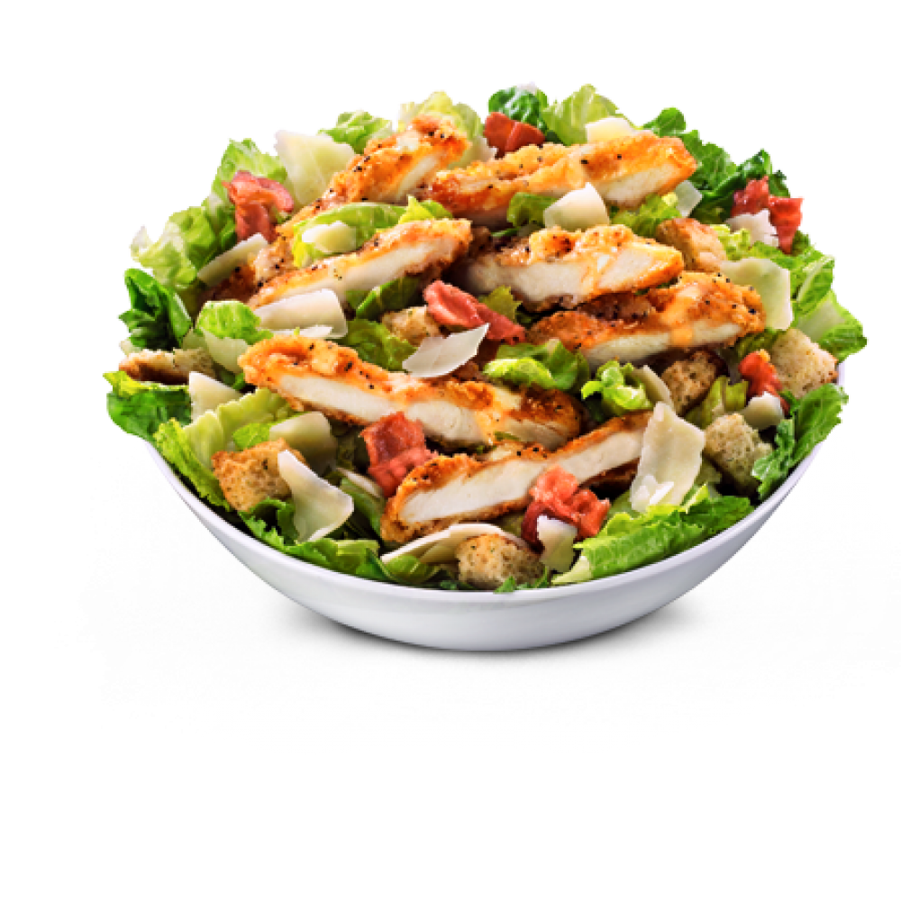

Salade César

Description
La salade César est une recette de cuisine de salade composée de la cuisine américaine, traditionnellement préparée en salle à côté de la table, à base de laitue romaine, œuf dur, croûtons, parmesan et de sauce César à base de parmesan râpé, huile d'olive, pâte d'anchois, ail, vinaigre de vin, moutarde, jaune d'œuf et sauce Worcestershire.
Créée en 1924 par le chef cuisinier italo-américain Caesar Cardini dans son restaurant Caesar's de Tijuana au Mexiquea, la salade César devient une des recettes populaires de la cuisine des États-Unis et de la restauration rapide, puis du monde entier.
Ingrédients:
Pour la sauce:
- 25g de parmesan râpé
- 2 c.à.c de cäpres
- 1/2 c.à.c de moutarde
- 1 trait de tabasco
- 1 citron
- 1 gousse d' ail
- 15cl d'huilde
- poivre
- sel
- 1 oeuf
- 25g de Parmesan en copeaux
- 2 c.à.s d'huilde
- 2 coeurs de laitue
- 4 tranches de pain écroûtées
Étapes:
- Faites dorer le pain, coupé en cubes, 3 min dans un peu d'huile.
- Déchirez les feuilles de romaine dans un saladier, et ajoutez les croûtons préalablement épongés dans du papier absorbant.
- Préparez la sauce : Faites cuire l'oeuf 1 min 30 dans l'eau bouillante, et rafraîchissez-le.
- Cassez-le dans le bol d'un mixeur et mixez, avec tous les autres ingrédients; rectifiez l'assaissonnement et incorporez à la salade.
- Décorez de copeaux de parmesan, et servez.